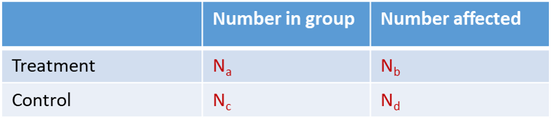
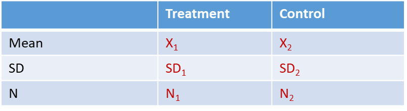

Section 9 Data Extraction
Extract relevant data as predefined in your protocol.
It is best practice for two reviewers to extract data independently to prevent errors. Any discrepancies can be resolved by a third independent reviewer or by discussion.
9.1 Study characteristics
Study characteristics to extract from included articles may include:
PICO information (e.g. age and sex of population, species and strain of animal, dose and timing of intervention, type and time of outcome assessment)
Study Design information
Study Quality information (see below)
Additional information (e.g. time between intervention and outcome assessment, any comorbidity information)
9.2 Quantitative data
Extracting quantitative and numerical data from included studies is necessary to perform meta-analysis to pool the effect sizes from
Your outcomes of interest may be:
Dichotomous (e.g. mortality, tumour presence) 
Continuous (e.g. blood pressure, or weight loss) 
Count Data (e.g. number of events)
Data about your outcomes may be provided in various formats including:
In tables
In text
In graphs
You may need to use tools such as Adobe desktop ruler or WebPlotDigitizer to extract numerical values (e.g. means and standard deviations (SD) or standard error of the mean (SEM) from graphs). Some studies may report values on a different scale. Be aware, you may need to convert these to a scale that is common across all studies (e.g. log scale conversion).
9.3 Data extraction software
As you are extracting these pieces of information you will want to store them in the same place for easier, later synthesis and analysis.
We recommend using SyRF the Systematic Review Facility to extract and store your data. It is a free-to-use online platform where you can create custom data extraction forms for your review. Flexible questions types and question settings, as well as online format allow for easy data extraction for you and your review team to simultaneous extract data from included papers. For more information see the SyRF Website and the SyRF Help Guide to set up your free review project.
Website by A Bannach-Brown on behalf of CAMARADES & CAMARADES Berlin
CAMARADES.Berlin@charite.de

This work is licensed under a Creative Commons Attribution 4.0 International License.